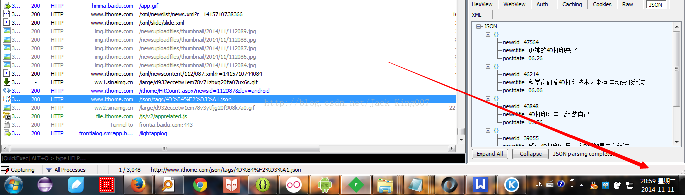
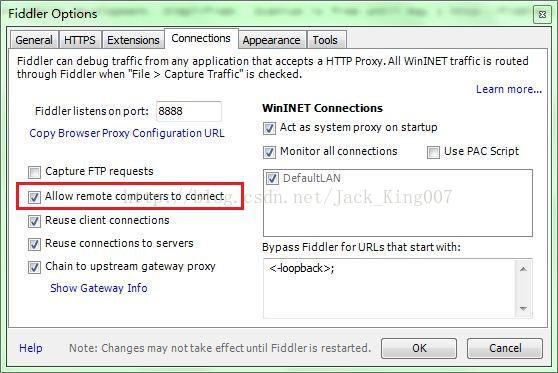
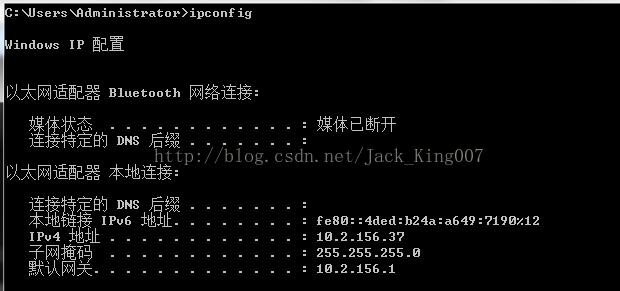
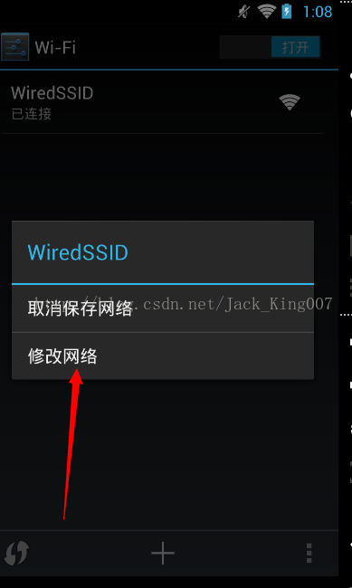
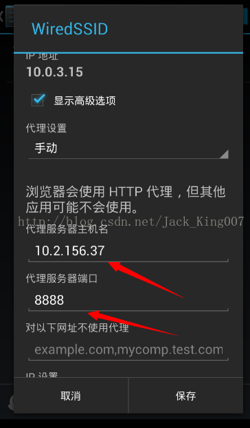
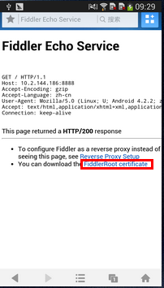
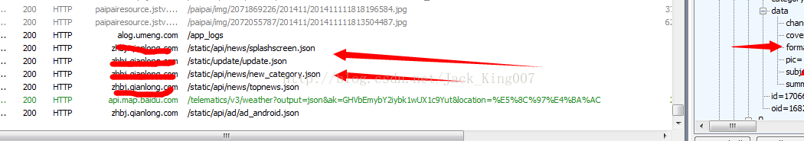

今天闲着没事，谁让我今天是光棍节呢，算给大家一个福利，没事逛着应用市场，想找个应用高仿下，突然发现一个应用居然跟我一个名字尼玛，尼玛应用界面做的很简单，我觉得应该不难。
惯性操作想去破解APK，找专门放URL的类，结果呢.......找了十分钟没找到，尼玛碰到硬渣子，难得碰到保护的这么好的应用。
如果大家没有合适额逆向破解apk 的工具可以去看看我写的一篇帖子，里面介绍了许多实用的安卓小工具
接着我想这，老师给过我一个抓包工具，结果呢 第一次尝试，现在还没关 ，哈哈
先看看效果呗 大家可以看看时间 ，刚刚抓取的。嘿嘿 。高仿的APP也快做好了，嘻嘻

第一步：下载神器Fiddler,下载链接：
点击下载软件
下载完成之后，傻瓜式的安装一下了！
第二步：设置Fiddler
后面有图片演示的
打开Fiddler, Tools-> Fiddler Options (配置完后记得要重启Fiddler)
选中"Decrpt HTTPS traffic", Fiddler就可以截获HTTPS请求
选中"Allow remote computers to connect". 是允许别的机器把HTTP/HTTPS请求发送到Fiddler上来

记住这个端口号是:8888，等下要在手机上设置，如果不像麻烦 安卓开发者可以在 模拟器上设置
第三步：设置Android手机
首先获取PC的ip地址：命令行中输入:ipconfig,获取ip地址

好吧，这时候我就拿到了IP地址和端口号了
下面我用模拟器设置一下
确定一下手机和PC是连接在同一个局域网中
进入手机的设置->点击进入WLAN设置->选择连接到的无线网，长按弹出选项框：如图所示:


选择显示高级选项，将代理设置成手动，将上面获取到的ip地址和端口号填入，点击保存。这样就将我们的手机设置成功了。
第四步：下载Fiddler的安全证书
使用Android手机的浏览器打开：http://10.2.145.187:8888， 点"FiddlerRoot certificate" 然后安装证书，如图:

到这里我们就设置好所有的值，下面就来测试一下，

好啦 成功了 ， 如果有问题 可以给我留言